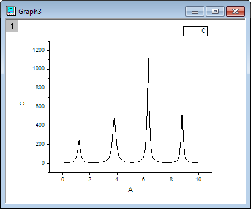
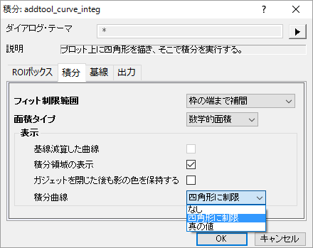
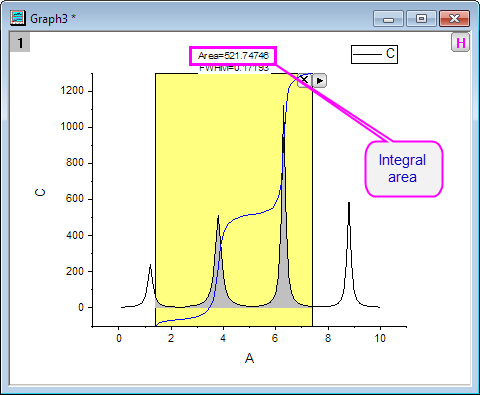
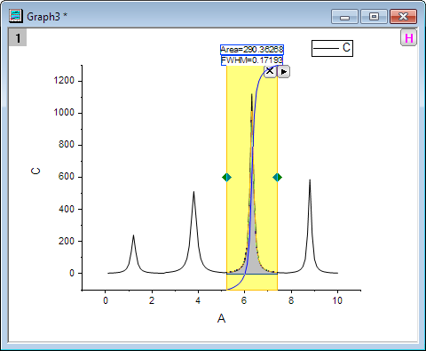
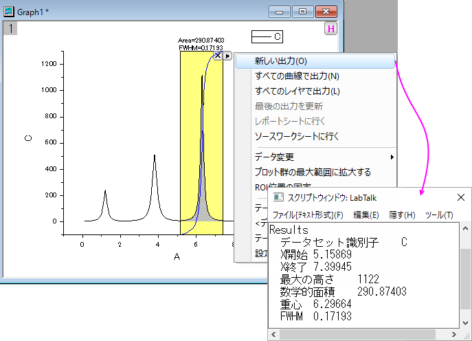
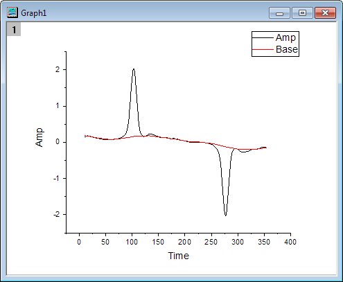
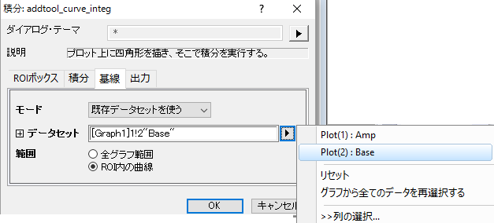
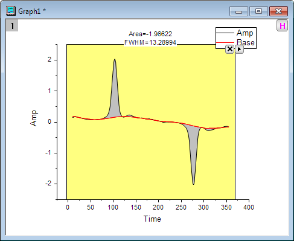

積分ガジェット
Integrate-Gadget
サマリー
積分ガジェットはデータプロットの数値的積分を行い、曲線以下の面積を計算します。グラフ上に表示されるデータプロットの任意の位置をガジェットの「関心のある範囲（ROI）」で選択して積分できます。
学習する項目
- 四角形の範囲で簡単に積分する
- 積分の制限と基線を指定する
- ROIボックス内で積分曲線を表示する
- ピークの範囲、ピークの高さ、ピークの中心、FWHMなどのパラメータを計算する
積分を行い分量を出力する
- 新規ワークブックを開始して、<Originプログラムフォルダ>Samples\Curve fittingにあるOriginのサンプルデータ、Multiple Peaks.DATをインポートします。
- Col(C)を選択し、作図： 線図： 線図を選択してグラフを作図します。

- グラフウィンドウをアクティブにして、Originメニューからガジェット： 積分を選び、積分: addtool_curve_integダイアログを開きます。
積分タブで積分曲線ドロップダウンリストから四角形に制限を選択し、四角形の内部に積分曲線を表示します。

- OK ボタンをクリックします。黄色い四角形と青い積分曲線がグラフの上に追加されました。積分範囲は灰色で着色され、その値が長方形の上部に表示されます。

- 黄色いROIボックスを移動して、積分を行いたい1つのピークに合わせます。

- ROIボックスの右上角にある三角形のボタン
 をクリックして、フライアウトメニューから新しい出力を選択します。スクリプトウィンドウにガジェット：積分結果が表示されます。
をクリックして、フライアウトメニューから新しい出力を選択します。スクリプトウィンドウにガジェット：積分結果が表示されます。

グラフの基線と共に積分する
- 新しいワークブックを開き、\Samples\Spectroscopy\ Peaks with Base.DATファイルをインポートします。
- Col(B)とCol(C)を選択して、作図: 線図： 線図を選択してグラフを作図します。

- グラフウィンドウをアクティブにして、Originメニューからガジェット： 積分を選び、積分: addtool_curve_integダイアログを開きます。
- 基線タブでモードとして既存のデータセットを使用を選びます。Plot(2): Baseをデータセットとして選択し、OKボタンをクリックします。

- 三角形ボタン をクリックし、プロット群の最大範囲に拡大するをフライアウトメニューから選択し、曲線全体を積分します。
